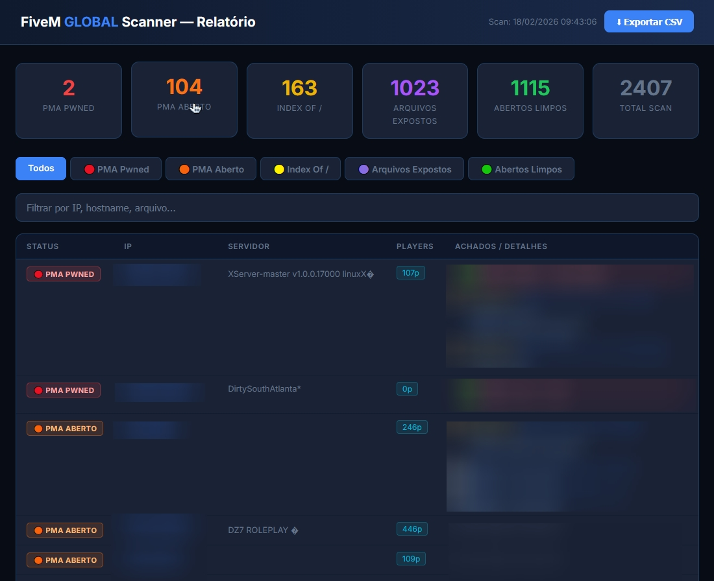
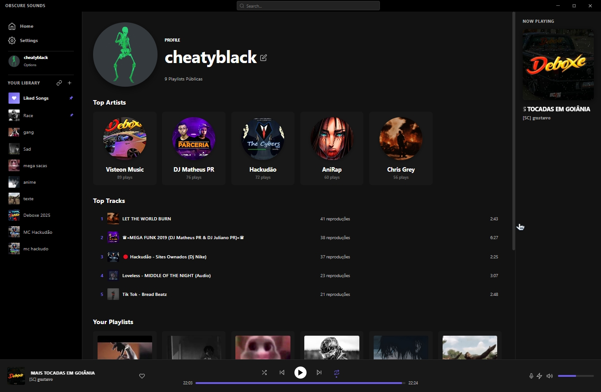
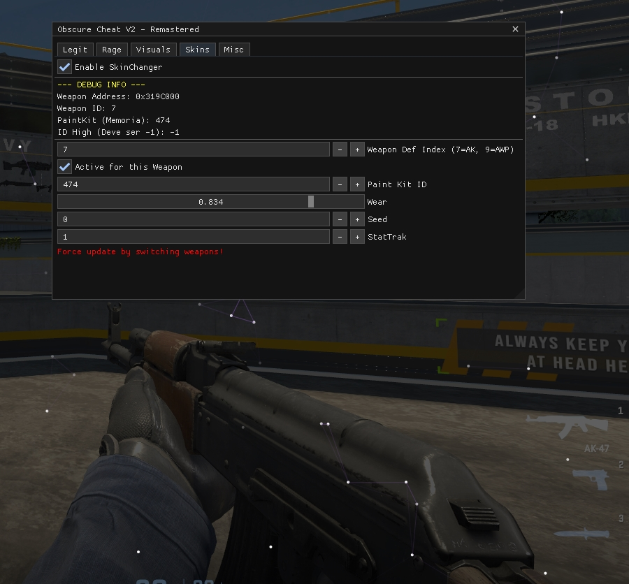
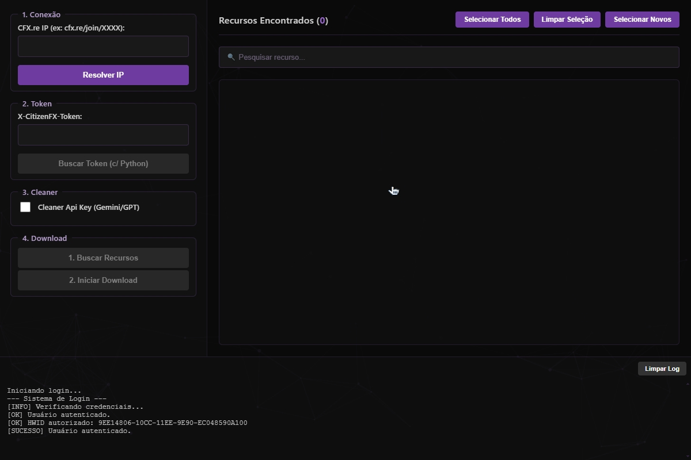
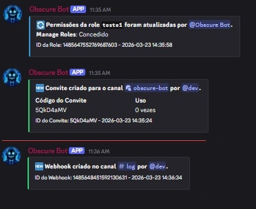

Sobre Mim
Me chamo Brayan Henrique, tenho 20 anos e sou de Fazenda Rio Grande. Estou atualmente no 2º ano de Engenharia de Software na UNINTER. Trabalho como especialista em engenharia reversa, segurança da informação e desenvolvimento back-end. Meu trabalho é focado na análise e manipulação de sistemas em baixo nível. Trabalho com experiência em análise estrutural de softwares complexos, como a interação direta com memória, processos e componentes do sistema operacional.
Desenvolvo soluções seguras como sistemas de autenticação, controle de acesso e proteção de software. Além disso, trabalho na identificação e análise de comportamentos maliciosos, como a realização de análise forense digital, inspeção de processos e testes de intrusão.
Meu objetivo é o desenvolvimento de soluções eficientes, seguras e de alta performance. Trabalho com conhecimentos em automação, arquitetura de sistemas e análise de baixo nível para a resolução prática de problemas complexos.
Fora do contexto técnico, meus hobbies incluem buscar novas coisas para aprender, jogos online, treinar na academia, ouvir música e sair para conhecer novos lugares.
Formação e Conhecimentos Técnicos
- Formação Acadêmica: Ensino Médio Completo e Graduação em Engenharia de Software pela UNINTER (Cursando o 2º ano).
- Cursos Complementares: Python Avançado e Básico (Solyd), Pentest Avançado e Básico (Solyd).
- Idiomas: Português e Inglês.
- Linguagens de Programação: C++, C#, Java, Python, Lua, JavaScript e Bash.
- Engenharia Reversa e Manipulação de Memória: Domínio avançado em análise e modificação de binários, com atuação direta sobre memória e processos. Experiência com ferramentas como x64dbg, dnSpy e Cheat Engine. Conhecimento sólido em ofuscação e deofuscação de código, além do desenvolvimento de métodos de evasão e bypass de mecanismos de proteção. Criação de injetores (Manual Map, Kernel Map e Thread Hijacking) e desenvolvimento de componentes em nível de kernel (Ring 0).
- Análise de Sistemas e Forense Digital: Atuação na identificação de comportamentos anômalos e softwares não autorizados por meio de inspeção de processos, análise de memória e auditoria de logs. Utilização de ferramentas como Process Hacker, análise de strings, Journal Map e descompiladores para rastreamento e investigação de atividades suspeitas.
- Segurança da Informação: Experiência em testes de intrusão (Pentest), identificação de vulnerabilidades e análise de resiliência de sistemas. Utilização de ferramentas como SQLmap, Nmap, John the Ripper, Medusa e Angry IP Scanner para mapeamento de rede, exploração de vulnerabilidades, auditoria de credenciais e análise de superfícies de ataque.
- Back-end, Automação e Integração de Sistemas: Desenvolvimento de aplicações back-end integradas a bancos de dados SQL, criação e consumo de APIs e automação de processos. Implementação de sistemas de autenticação e controle de acesso, incluindo validação por HWID e gerenciamento de sessões.
- Desenvolvimento de Ferramentas e Análise de Software: Criação de utilitários avançados para análise e manipulação de aplicações, incluindo desenvolvimento de dumpers para extração de offsets em softwares complexos, além de ferramentas de diagnóstico, monitoramento e otimização de sistemas.
- Modelagem 3D: Manipulação e adaptação de modelos tridimensionais, incluindo edição de malhas e assets utilizando Blender e ZModeler.
Portfólio de Projetos
Obscure Analyze - Varredura e Pentest Automatizado

Ferramenta de segurança ofensiva desenvolvida em Python para auditoria de rede, identificação de vulnerabilidades e mapeamento de superfícies de ataque.
- Processamento de Rede: Interceptação e análise de dados para extração de IPs e portas ativas.
- Execução Concorrente: Varredura multithread com alta performance utilizando ThreadPoolExecutor.
- Testes Automatizados: Ataques de força bruta e identificação de diretórios expostos.
- Extração de Dados Sensíveis: Busca por arquivos críticos como dumps SQL, .env e credenciais.
- Relatórios: Geração automática de relatórios em HTML e CSV.
Obscure Sounds - Engine de Áudio

Software de streaming com processamento de áudio em tempo real e foco em desempenho.
- DSP: Crossfade, equalizador de 10 bandas e controle de dinâmica.
- Baixo Nível: Integração com Core Audio via pycaw.
- Performance: Cache híbrido (RAM/Disco) com baixa latência.
- Back-end: Autenticação JWT e sincronização com banco de dados.
- Integrações: Discord Rich Presence e APIs externas.
Obscure Cheat (CS2) - Engenharia de Memória

Aplicação em C++ com atuação direta na memória do processo, utilizando engenharia reversa para modificação de comportamento em tempo real.
- Injeção: Manual Mapping com resolução manual de IAT.
- Evasão: Execução via Thread Hijacking.
- Hooking: DirectX 11 com Kiero e MinHook.
- Renderização: Interface com Dear ImGui (ESP).
- Lógica: World-to-Screen, visibilidade e controle vetorial.
- Memória: Leitura dinâmica de offsets e estruturas internas.
Obscure Dumper - Engenharia Reversa e Extração

Aplicação voltada à análise de memória, interceptação de rede e descriptografia de dados protegidos.
- Memory Parsing: Leitura de memória com pymem.
- Criptografia: Descriptografia com ChaCha20 e AES.
- Interceptação: Análise de payloads em tempo real.
- Evasão: Técnicas anti-detecção em ambiente local.
- Rede: Sistema resiliente para conexões instáveis.
Obscure Bot - Automação e Monitoramento

Sistema automatizado para coleta, análise e monitoramento de dados em tempo real.
- Integração: APIs externas e VirusTotal.
- OSINT: Coleta e enriquecimento de dados.
- Logs: Monitoramento em tempo real via eventos.
- Permissões: Controle de acesso (ACL).
- Execução: Processamento assíncrono com asyncio.
Contato Profissional
Utilize o formulário abaixo para estabelecer contato técnico ou enviar propostas: